03-diff-state-visualizations
markrobinsonuzh
2019-01-30
Last updated: 2019-01-30
workflowr checks: (Click a bullet for more information)-
✖ R Markdown file: uncommitted changes
The R Markdown is untracked by Git. To know which version of the R Markdown file created these results, you’ll want to first commit it to the Git repo. If you’re still working on the analysis, you can ignore this warning. When you’re finished, you can runwflow_publishto commit the R Markdown file and build the HTML. -
✔ Environment: empty
Great job! The global environment was empty. Objects defined in the global environment can affect the analysis in your R Markdown file in unknown ways. For reproduciblity it’s best to always run the code in an empty environment.
-
✔ Seed:
set.seed(20190128)The command
set.seed(20190128)was run prior to running the code in the R Markdown file. Setting a seed ensures that any results that rely on randomness, e.g. subsampling or permutations, are reproducible. -
✔ Session information: recorded
Great job! Recording the operating system, R version, and package versions is critical for reproducibility.
-
Great! You are using Git for version control. Tracking code development and connecting the code version to the results is critical for reproducibility. The version displayed above was the version of the Git repository at the time these results were generated.✔ Repository version: afc458c
Note that you need to be careful to ensure that all relevant files for the analysis have been committed to Git prior to generating the results (you can usewflow_publishorwflow_git_commit). workflowr only checks the R Markdown file, but you know if there are other scripts or data files that it depends on. Below is the status of the Git repository when the results were generated:
Note that any generated files, e.g. HTML, png, CSS, etc., are not included in this status report because it is ok for generated content to have uncommitted changes.Ignored files: Ignored: chimera_tal1_differential_state/.DS_Store Ignored: chimera_tal1_differential_state/.Rhistory Ignored: chimera_tal1_differential_state/.Rproj.user/ Ignored: demuxlet_differential_state/.DS_Store Ignored: demuxlet_differential_state/.Rhistory Ignored: demuxlet_differential_state/.Rproj.user/ Untracked files: Untracked: .DS_Store Untracked: .gitignore Untracked: chimera_tal1_differential_state/analysis/01-preprocess.Rmd Untracked: chimera_tal1_differential_state/data/README.txt Untracked: chimera_tal1_differential_state/data/corrected_pcas.rds Untracked: chimera_tal1_differential_state/data/genes.tsv Untracked: chimera_tal1_differential_state/data/meta.tab Untracked: chimera_tal1_differential_state/data/raw_counts.mtx Untracked: chimera_tal1_differential_state/data/sizefactors.tab Untracked: demuxlet_differential_state/analysis/01-preprocess.Rmd Untracked: demuxlet_differential_state/analysis/02-diff-state.Rmd Untracked: demuxlet_differential_state/analysis/03-diff-state-visualizations.Rmd Untracked: demuxlet_differential_state/analysis/04-diff-state-genesets.Rmd Untracked: demuxlet_differential_state/data/GSE96583_batch1.genes.tsv.gz Untracked: demuxlet_differential_state/data/GSE96583_batch1.total.tsne.df.tsv.gz Untracked: demuxlet_differential_state/data/GSE96583_batch2.genes.tsv.gz Untracked: demuxlet_differential_state/data/GSE96583_batch2.total.tsne.df.tsv.gz Untracked: demuxlet_differential_state/data/GSE96583_genes.txt.gz Untracked: demuxlet_differential_state/data/GSM2560245_A.mat.gz Untracked: demuxlet_differential_state/data/GSM2560245_barcodes.tsv.gz Untracked: demuxlet_differential_state/data/GSM2560246_B.mat.gz Untracked: demuxlet_differential_state/data/GSM2560246_barcodes.tsv.gz Untracked: demuxlet_differential_state/data/GSM2560247_C.mat.gz Untracked: demuxlet_differential_state/data/GSM2560247_barcodes.tsv.gz Untracked: demuxlet_differential_state/data/GSM2560248_2.1.mtx.gz Untracked: demuxlet_differential_state/data/GSM2560248_barcodes.tsv.gz Untracked: demuxlet_differential_state/data/GSM2560249_2.2.mtx.gz Untracked: demuxlet_differential_state/data/GSM2560249_barcodes.tsv.gz Untracked: demuxlet_differential_state/output/GSE96583_diff_state_list.rds Untracked: demuxlet_differential_state/output/GSE96583_diff_state_table.csv Untracked: demuxlet_differential_state/output/GSE96583_diff_state_table.rds Untracked: demuxlet_differential_state/output/GSE96583_pseudobulks.rds Untracked: demuxlet_differential_state/output/GSE96583_sce.rds Untracked: demuxlet_differential_state/output/MAGL_mouse-res-tidy.csv
Load packages
suppressPackageStartupMessages({
library(dplyr)
library(SingleCellExperiment)
library(scater)
library(edgeR)
})Load back in data and results
sce <- readRDS("output/GSE96583_sce.rds")
tbl <- readRDS("output/GSE96583_diff_state_table.rds")
tbl <- tbl %>% dplyr::arrange(FDR)
pb <- readRDS("output/GSE96583_pseudobulks.rds")Top cell-type-specific DE changes
tbls <- lapply(split(tbl, tbl$cluster_id), head, 6)
ps <- lapply(tbls, function(u) {
plotExpression(sce[,colData(sce)$cluster_id==u$cluster_id[1]],
features=u$gene,
x="sample_id", colour_by = "group_id",
ncol=3) +
ggtitle(u$cluster_id[1])
})
lapply(ps, print)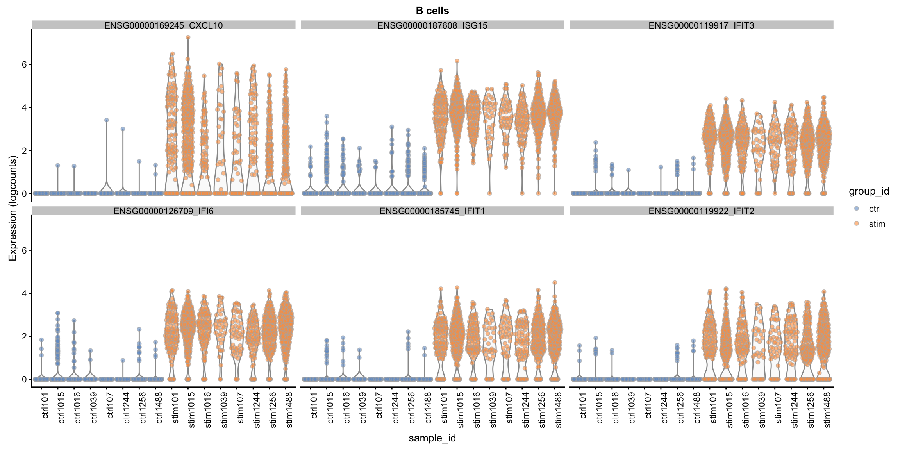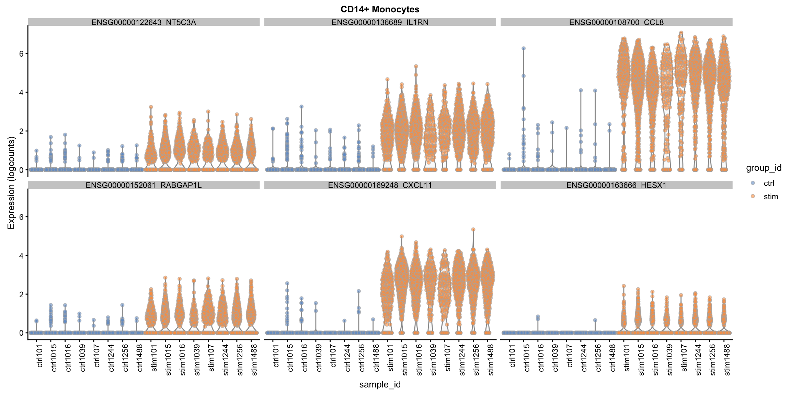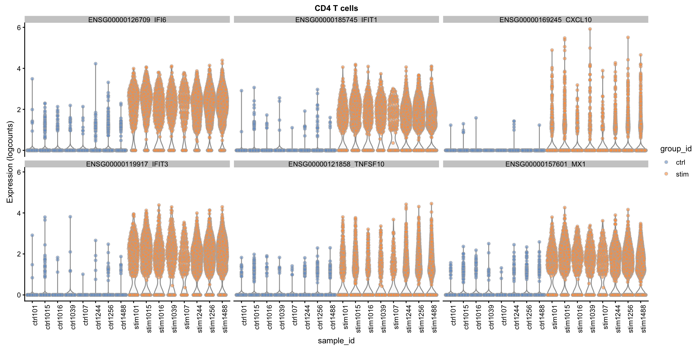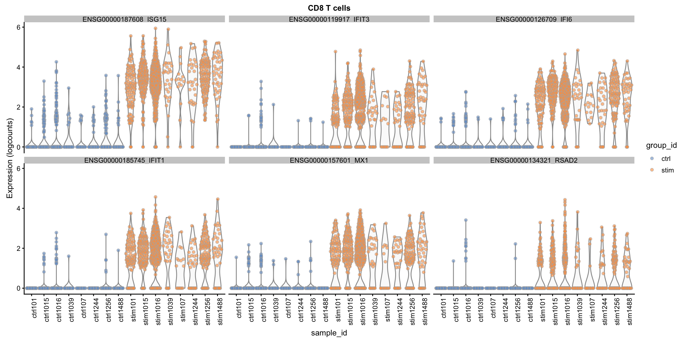 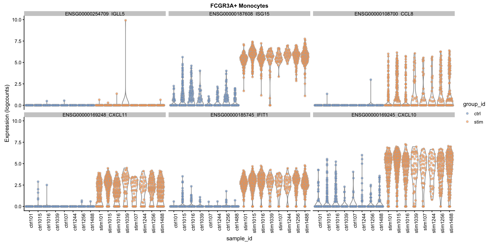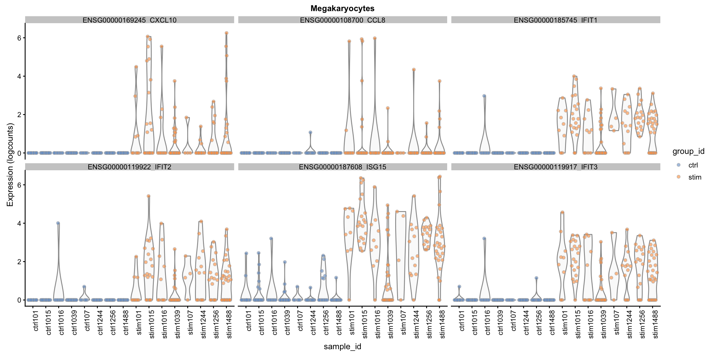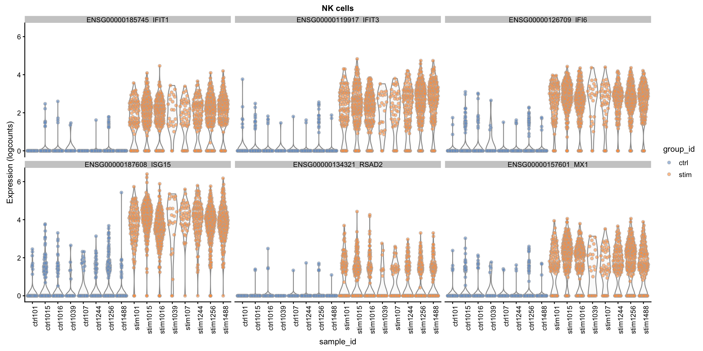
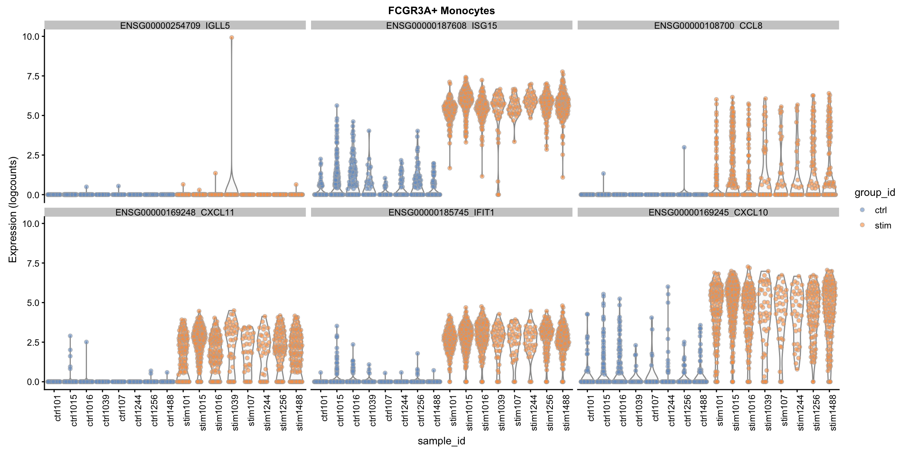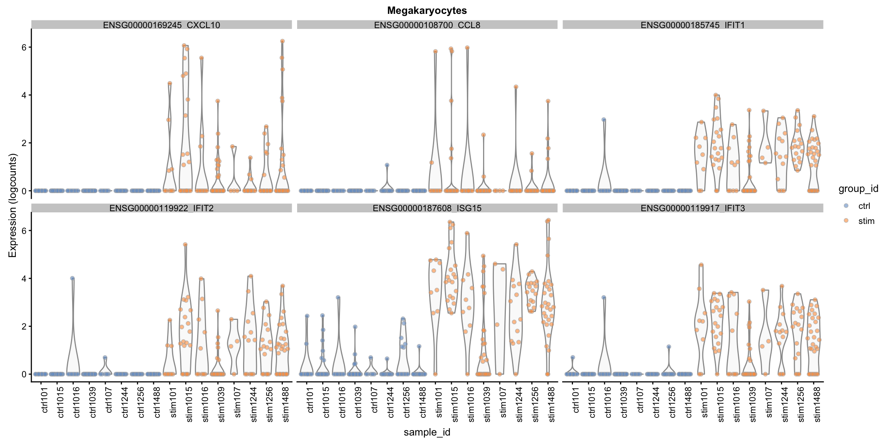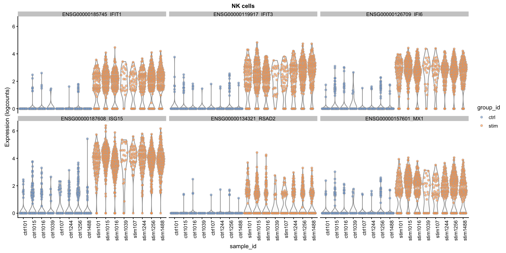
$`B cells`
$`CD14+ Monocytes`
$`CD4 T cells`
$`CD8 T cells`
$`Dendritic cells`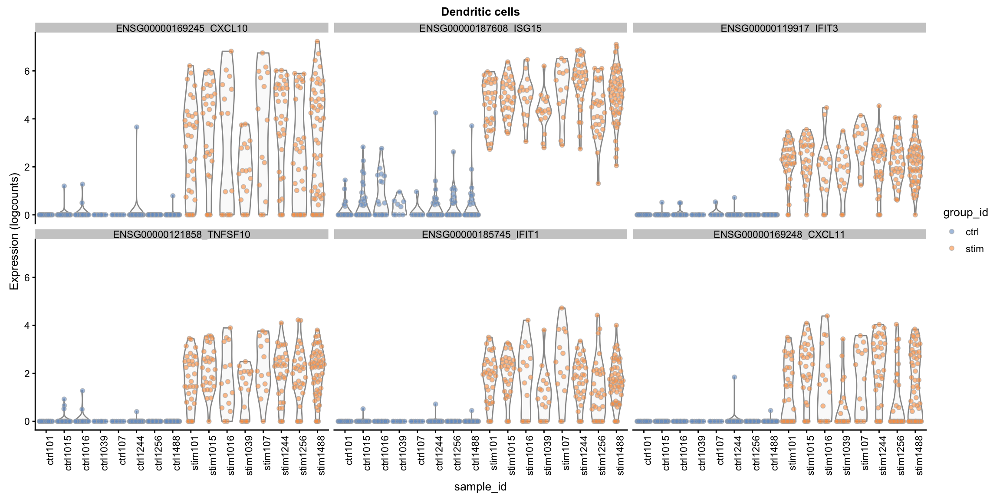
$`FCGR3A+ Monocytes`
$Megakaryocytes
$`NK cells`Pseudo-bulk level MDS plot
pb_matrix <- do.call(cbind, pb)
ocn <- colnames(pb_matrix)
nc <- sapply(pb, ncol)
colnames(pb_matrix) <- paste0(rep(names(nc), nc), "__", ocn)
d <- DGEList(pb_matrix)
d <- calcNormFactors(d)
d <- d[rowSums(cpm(d)>1)>=8,]
mds <- edgeR::plotMDS.DGEList(d, plot=FALSE)
df <- data.frame(MDS1=mds$x, MDS2=mds$y, celltype=rep(names(nc),nc),
names=ocn, group=substr(ocn,1,4))
ggplot(df, aes(x=MDS1, y=MDS2, shape=group, colour=celltype)) +
geom_point(size=5, alpha=.8)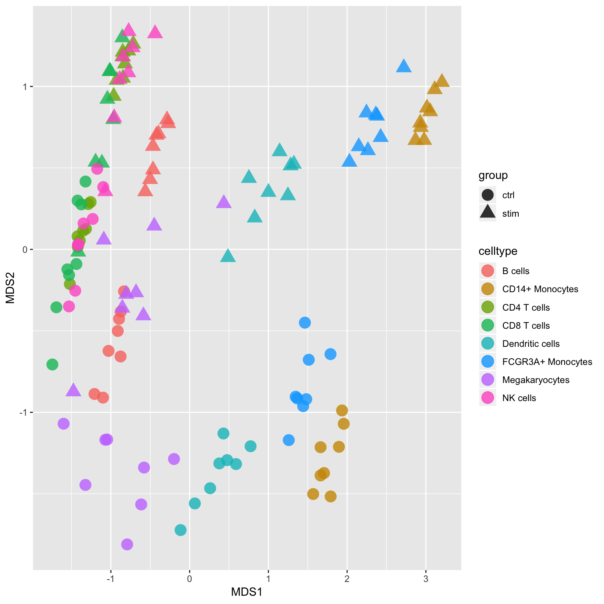
Session information
sessionInfo()R version 3.5.2 (2018-12-20)
Platform: x86_64-apple-darwin15.6.0 (64-bit)
Running under: macOS High Sierra 10.13.6
Matrix products: default
BLAS: /Library/Frameworks/R.framework/Versions/3.5/Resources/lib/libRblas.0.dylib
LAPACK: /Library/Frameworks/R.framework/Versions/3.5/Resources/lib/libRlapack.dylib
locale:
[1] C
attached base packages:
[1] parallel stats4 stats graphics grDevices utils datasets
[8] methods base
other attached packages:
[1] bindrcpp_0.2.2 edgeR_3.24.3
[3] limma_3.38.3 scater_1.10.1
[5] ggplot2_3.1.0 SingleCellExperiment_1.4.1
[7] SummarizedExperiment_1.12.0 DelayedArray_0.8.0
[9] BiocParallel_1.16.5 matrixStats_0.54.0
[11] Biobase_2.42.0 GenomicRanges_1.34.0
[13] GenomeInfoDb_1.18.1 IRanges_2.16.0
[15] S4Vectors_0.20.1 BiocGenerics_0.28.0
[17] dplyr_0.7.8
loaded via a namespace (and not attached):
[1] locfit_1.5-9.1 Rcpp_1.0.0
[3] lattice_0.20-38 assertthat_0.2.0
[5] rprojroot_1.3-2 digest_0.6.18
[7] R6_2.3.0 plyr_1.8.4
[9] backports_1.1.3 evaluate_0.12
[11] pillar_1.3.1 zlibbioc_1.28.0
[13] rlang_0.3.1 lazyeval_0.2.1
[15] whisker_0.3-2 R.utils_2.7.0
[17] R.oo_1.22.0 Matrix_1.2-15
[19] rmarkdown_1.11 labeling_0.3
[21] stringr_1.3.1 RCurl_1.95-4.11
[23] munsell_0.5.0 HDF5Array_1.10.1
[25] vipor_0.4.5 compiler_3.5.2
[27] xfun_0.4 pkgconfig_2.0.2
[29] ggbeeswarm_0.6.0 htmltools_0.3.6
[31] tidyselect_0.2.5 tibble_2.0.1
[33] gridExtra_2.3 GenomeInfoDbData_1.2.0
[35] workflowr_1.1.1 viridisLite_0.3.0
[37] crayon_1.3.4 withr_2.1.2
[39] bitops_1.0-6 R.methodsS3_1.7.1
[41] grid_3.5.2 gtable_0.2.0
[43] git2r_0.24.0 magrittr_1.5
[45] scales_1.0.0 stringi_1.2.4
[47] reshape2_1.4.3 XVector_0.22.0
[49] viridis_0.5.1 DelayedMatrixStats_1.4.0
[51] cowplot_0.9.4 Rhdf5lib_1.4.2
[53] tools_3.5.2 beeswarm_0.2.3
[55] glue_1.3.0 purrr_0.2.5
[57] yaml_2.2.0 colorspace_1.4-0
[59] rhdf5_2.26.2 knitr_1.21
[61] bindr_0.1.1 This reproducible R Markdown analysis was created with workflowr 1.1.1